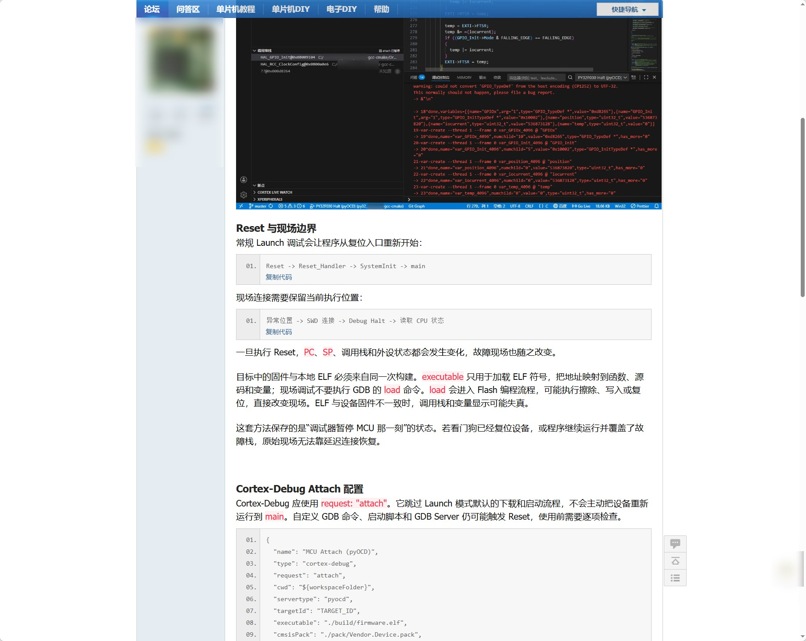

将 Markdown 文件转换为无 CSS 依赖的纯 HTML，输出的 HTML 可直接粘贴到 Discuz! 论坛编辑器（纯文本模式）中使用。

# 安装依赖
pip install markdown
# 基础转换
python md2html.py article.md
# 去掉 YAML front matter，指定输出路径
python md2html.py article.md --strip-front -o output.html
本 README 本身也是 Markdown 写的，可直接转换自身作为示例：
python md2html.py README.md -o README.html
生成的 README.html 是一个完整的功能演示，涵盖标题、代码块、行内高亮、表格等所有特性。
| 参数 | 说明 |
|---|---|
| input | 输入的 Markdown 文件路径 |
| -o, --output | 输出路径（默认同目录同名 .html） |
| --strip-front | 去掉 YAML front matter（--- 包裹的元数据） |
| --body-only | 只输出 body 内部 HTML，不含 <html> / <head> 外层 |
| --code-separator | 代码块使用经典 ---- 分隔符模式 |
h1 → <b><font size="5">，h2 → <font size="4">，以此类推。首个标题前不额外换行，后续标题前自动插入 2 个 <br> 拉开章节间距。
默认现代模式（推荐）：
<div class="blockcode">
<blockquote>缩进保留的代码行<br>
下一行</blockquote>
</div>
经典分隔符模式（--code-separator）：
--------------------------------------------------------------------------------
<br>
<br>
<div class="blockcode">代码内容</div>
--------------------------------------------------------------------------------<br>
80 字符 - 分隔线包裹，与 Discuz! [code] 标签风格一致。
`inline code` → 粉底红字高亮：
<font color="#FF2643"><font style="background-color:#FFF0F2">text</font></font>
<thead> / <tbody> 合并为统一 <tbody>，表头 <th> 自动加 <b> 粗体。
每个 </p> 后插入一个 <br> 保证段落间距；代码块前自动去掉多余 <br> 使内容区紧贴。
每篇文章末尾自动附加：
<hr>
<p>build 28 July 2026 13:00 (UTC+8)</p>
--body-only 模式不输出时间戳。
build 28 July 2026 13:35 (UTC+8)